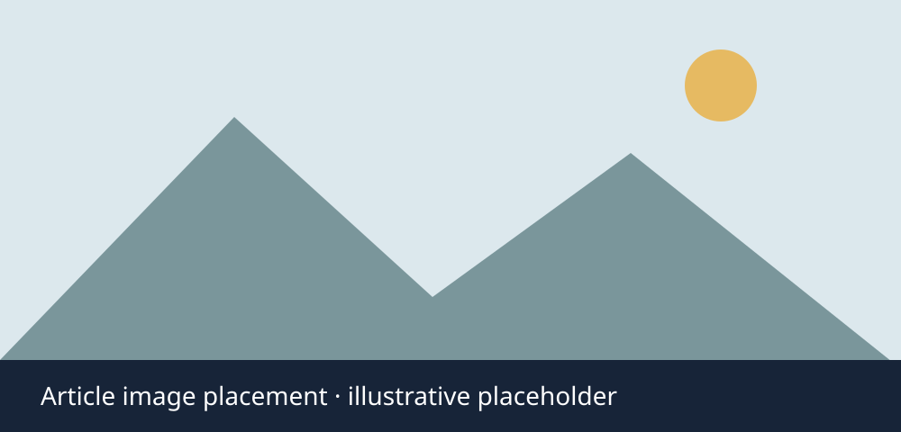

2026-11-18 — Your daily briefing · layout preview
A preview of the new layout. All examples below are fictional.
Ukraine · war impact · ★★★★★ 5/5 impact
Example: a development with concrete military consequences

Layout demonstration only — this is not a news report. A real digest would summarize feed evidence, attribute contested claims and explain the practical consequences.
Why it matters: Example explanation of the potential effect on capacity or civilian protection, with uncertainty stated.
- Illustrative source link — Demo source
European politics · ★★★★☆ 4/5 impact
Example: a consequential European policy decision
The rating sits beside the topic, followed by a short summary, an explanation of importance and the original source.
Why it matters: Example explanation of what the decision changes, who is affected and when.
- Illustrative source link — Demo source
Science · new research · ★★★☆☆ 3/5 impact
Example: a new study with clearly stated limitations
Science coverage distinguishes preliminary findings from established evidence. Stories without a feed-provided image retain the same readable layout.
Why it matters: An informative finding, with study design and limitations made explicit.
- Illustrative source link — Demo source
AI summary of feed excerpts. Ratings reflect relevance and impact, not verified accuracy. Follow the source links for full context.